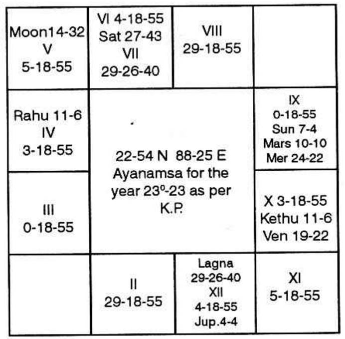
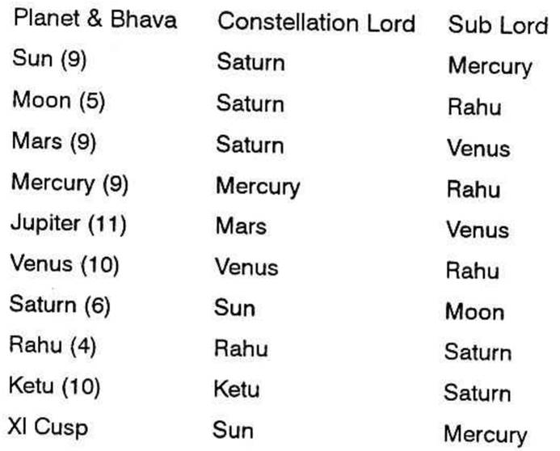

At 10-28 P.M. on 23-7-'70, a person asked saying “Sir, I have been placed under suspension from my service for more than two years. Please, tell me whether I shall be reinstated in my service or not; if so, when?”
“Give me a number within 249 please.”
“Take it as 145”.

The time, at the time of judgment was noted as 10-31 PM. on 23-7-'70. The lagna falls in Libra 29°26′40″ with the number 145. And, the other cusps calculated as per rule of K.P.
Balance of Saturn Dasa 3 yrs. 14 days as on 23-7-'70.

The moon indicates the mind of the consultant. Here Moon is posited in 5. The houses 5, 9, 1 indicate suspension. Thus the Moon has the relation with suspension of the consultant. Again, Moon is in the constellation of Saturn. The Saturn is posited in 6 and is aspected by the Jupiter posited in 11. The sub of Moon is Rahu which is aspected by the Venus and Jupiter. They are posited in 10 and 11 respectively. The houses 6, 10, 11 and 2 indicate promotion or reinstatement as per K.P. Hence the query is justified which related with the Question of reinstatement in the service as well.
The sub lord of the cusp of 11 is connected with any one of the houses 2, 6, 10 and 11 in any manner, the consultant will have the positive answer.
Here Mercury is the sub lord of the 11th cusp. Mercury is conjoined with Sun and Mars, the lord of 10 and 6 respectively. Mercury is the sign lord of 11. The sub of Mercury is Rahu—represents Saturn as well as Venus and Jupiter by aspect and occupation. Saturn, Jupiter and Venus are posited in 6, 11 and 10 respectively.
Hence, the consultant must have a positive answer and he must be successful in his attempt. Ultimately, he will be reinstated in his former position without any monetary loss.
As such, it is declared that he would win the case of suspension ultimately and would be reinstated in his service in the former position with all his arrear payments.
“Judge the significators of the house 2, 6, 10 and 11 for promotion or reinstatement in service.” The reinstatement is a kind of promotion as it enhances the status of a person from the position of suspension; income also increases.
2nd House is vacant; lord is Mars. Jupiter is in Mars star, 6th house is occupied by Saturn. Sun, Moon and Mars are posited in Saturn star. Lord of 6 is Mars.
10th house is occupied by Ketu and Venus. Ketu and Venus are posited in their respective stars. Lord of 10 is Sun. Saturn is in Sun’s star.
11th house is occupied by Jupiter. No one is in Jupiter star. Lord of 11 is Mercury. Mercury is its own star.
Hence, all the planets have come under the list of Significators, except Rahu. But Rahu by aspect will also become a significator. Jupiter and Venus both aspect Rahu. Rahu is in the sign of Saturn.
When this position arises, our Gurujee has suggested to us to eliminate those which are not the ruling planets at the time of judgment.
The ruling planets at the time of judgment are as follows:
Rising lagna: Pisces, Lord Jupiter
R/Lagna star: U.P. Pada, Lord Saturn
Moon’s sign: Pisces, Lord Jupiter
Moon’s star: U.P. Pada, Lord Saturn
Day: Thursday, Lord Jupiter
Hence, take Jupiter and Saturn. As Rahu occupies Saturn sign and is aspected by Jupiter take Rahu as the strong significator with the above.
Therefore, during the conjoined period of the above, the consultant will be reinstated without fail and the transit will agree.
At present, the consultant is running Saturn dasa Rahu bhukti Sun anthra and it is upto 30-8-1970 (around). Sun is the constellation lord of 10—signifies the 6 house matter. During this period, Saturn shookshma will start from 3-8-1970 will be upto 11-8-1970.
Moon will transit Scorpio on 11-8-70 through Saturn star. Mars is the sign lord of 2 and 6, and signifies the 6th house matter. Its sub signifies the 10th house matter. Saturn is the dasa lord and is posited in the 6th house. On 10th August, Moon will transit in Venus sign Libra, (Venus is the sign lord of 1, 8 and 12) and in the star of Jupiter (posited in 11th house). Besides this, all other planets on 11-8-70 are in the sign or star of the significators of 2, 6, 10 and 11.
So, it is declared to him after the selection of the date: “Sir, don't worry! You will be reinstated on 11-8-70", and you will rejoin duty on 11-8-70".
“Sure, Sir”
“Certainly”.
“Thanks”.
Days passed on. On 10-8-70, in the evening, that very gentleman came and said, “Your prediction is very correct. I have received the reinstatement orders today. I have been asked to rejoin on 11-8-70”.